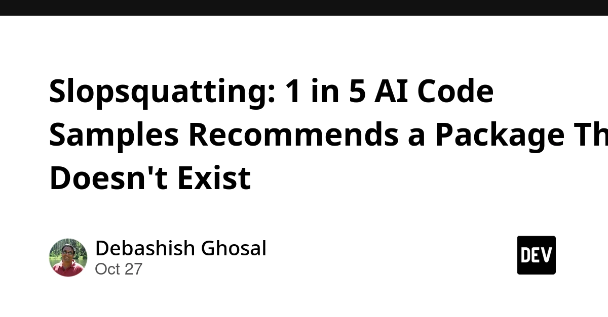
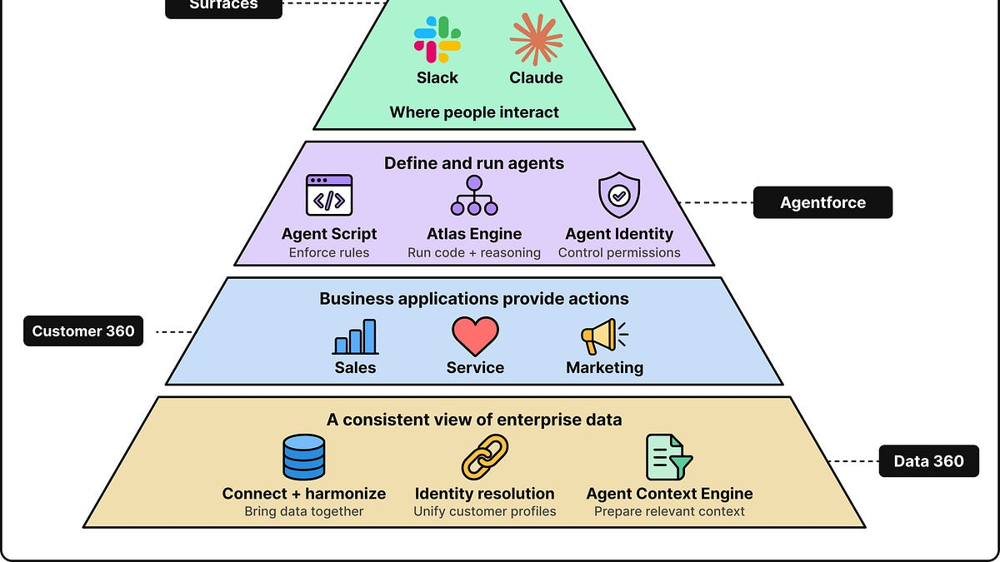
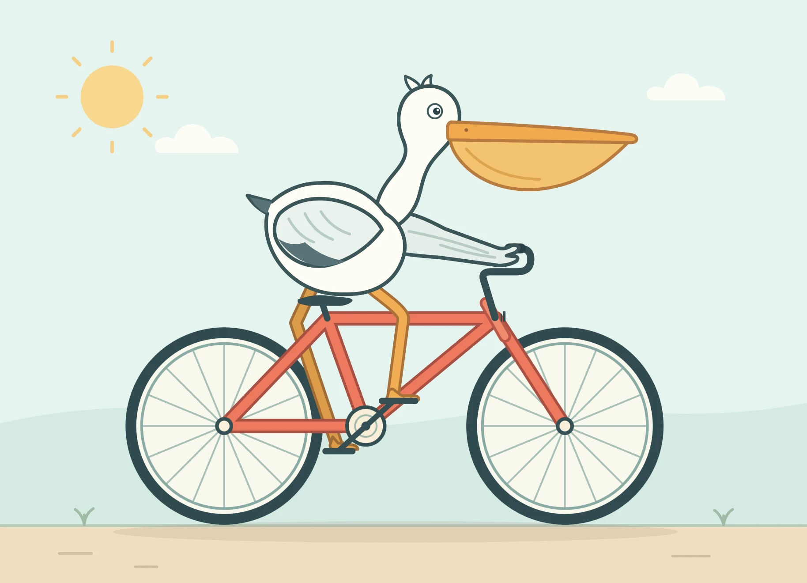
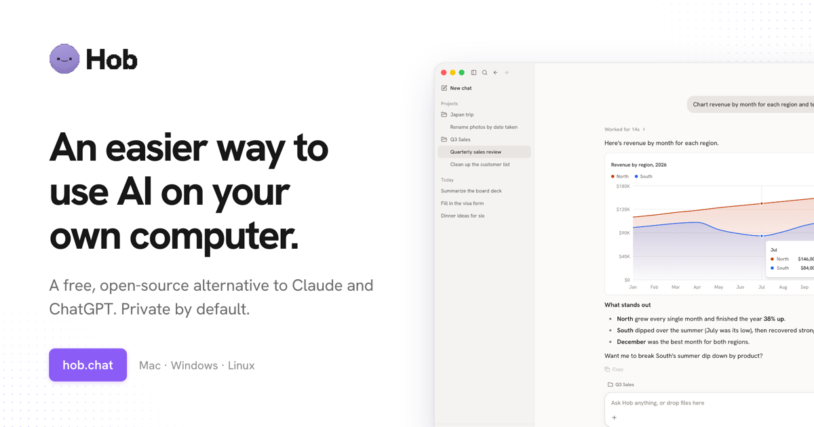
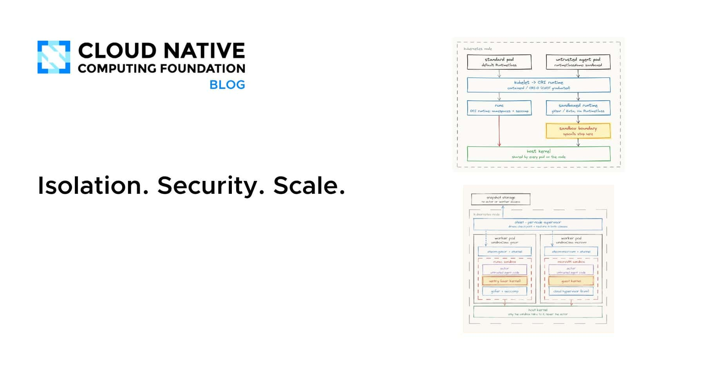
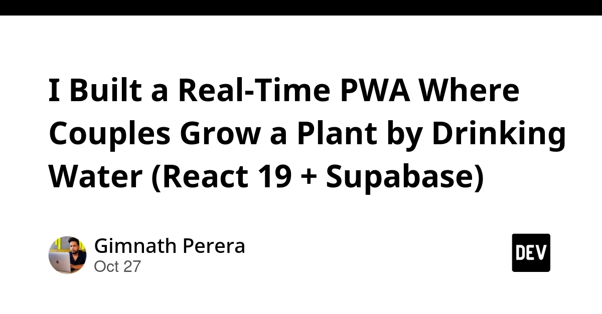
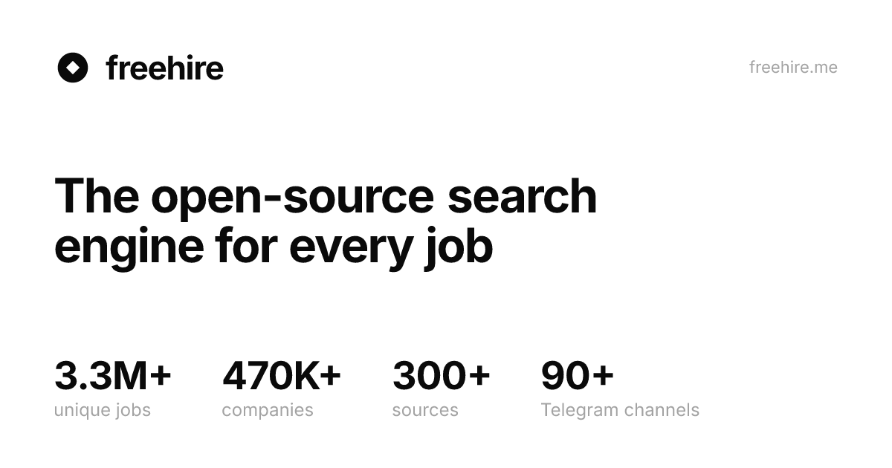
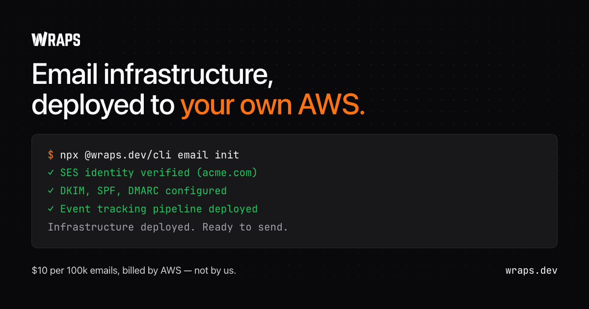
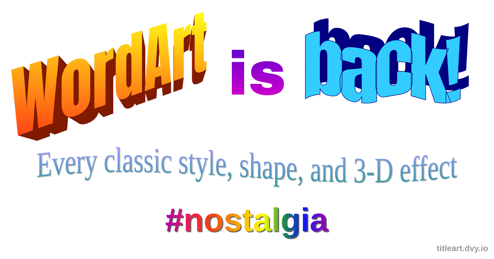

🔥 Top 3 (must read)
Slopsquatting: 1 in 5 AI Code Samples Recommends a Package That Doesn't Exist
AI coding assistants sometimes make up package names that look real, like
strutils-pro. Attackers then register those names, so the next developer who trusts the AI installs their code. You don't need to make a typo for this to happen. Seth Larson at the Python Software Foundation named it "slopsquatting". Why it matters: Your Node.js teams use AI assistants and npm every day. This attack is real now, and a dependency check in code review and CI is cheap protection.
A Deep Dive into Salesforce's Agent Tech Stack
Salesforce moved its AI agents to a new multi-layer design. Normal fixed code and reasoning models work together, so the agents act more reliably. Why it matters: This is a real case study on how to build AI agents that you can trust in production. It is useful if your team is adding AI features to its backends.

Ship It Conversations: Running Retros as Tabletop RPGs
Jinger Meilani is a Senior DevOps engineer at Mountain. She runs her team's retrospectives as a tabletop role-playing game, with chapters, characters and technical archetypes. She explains how to read the room, how to follow through on actions, and why a bit of silliness gets people to give honest answers. Why it matters: As an EM, you can use this idea to fix retros that feel flat or where people stay quiet.
R
🛠 Tools & releases
webframe: evaluated as a scraper and a sandbox
: Simon Willison tests webframe. It runs a web page like a program in a hidden headless web view.
console.log() output goes to stdout, and exceptions go to stderr.S
🤖 AI for developers
GPT-6.1 Terra
: OpenAI released a new fast, efficient model. Its focus is visual reasoning and precise computer use, which is useful for agents that control a UI.

Hob
: an open-source alternative to Claude Cowork and ChatGPT that runs on your device (HN discussion, 124 points).

CNCF: Isolation. Security. Scale.
: AI agents need isolation, policy enforcement and scale before you can run them safely in a controlled environment.

👔 Engineering & teams
Running Retros as Tabletop RPGs
: see Top 3.
R
🎯 For me
Slopsquatting is the most direct risk for your Node.js teams. Add a "does this package really exist and is it trusted?" check to code review and CI.
DuoDrop
: a real-time PWA (a web app that installs and works like a mobile app) built with React 19 + Supabase. It is a good example of a mobile-first PWA on your web stack.

Tabletop retros are an easy team-practice experiment for your next sprint.
💡 App ideas & indie builds
Freehire
(HN): an open-source search over 3M+ tech jobs, taken straight from company career boards. Problem: job boards are noisy and miss many roles. Inspiration: collect public data at the source, then make it searchable. It could also help when you are hiring.

Wraps
(HN): Resend-style email sending on your own AWS SES, open source. Problem: good email developer experience costs money, and cheap SES is hard to use. Inspiration: put a nice developer experience on top of cheap cloud services.

Proc-CLI
(HN): a CLI for managing processes and ports, designed to be easy for AI agents to use. Problem: agents struggle with "port already in use" and leftover processes. Inspiration: build developer tools for AI agents as users, not only for humans.
P
TitleArt
(HN, 389 points): makes text look like it's from 1997. Problem: just fun and nostalgia. Inspiration: a tiny, playful one-feature app can still get very popular.

🎓 Try this
Try webframe, using Simon Willison's notes. Point it at a page or a local HTML file. You get console output and errors in your terminal. This makes it a light way to run front-end smoke checks or quick scraping scripts in CI, without a full Playwright setup.